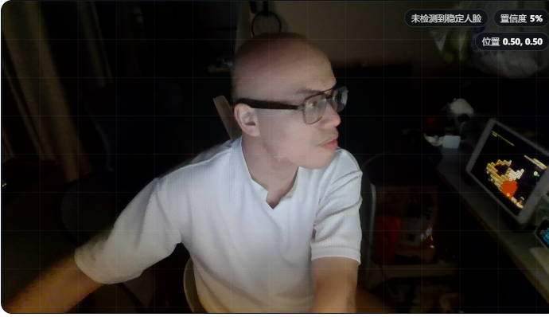

让电脑看懂你在做什么，然后主动帮你。
没有「信号」「通道」「语义动作」「校准」。用户只看到四个自己，以及打开后会得到什么。
「为什么我要配两条规则」的问题消失了——用户只决定要不要这个助手，具体怎么实现是系统的事。
让用户先看到它已经在工作，而不是先面对一张配置表。这是助手和设置页最本质的区别。
「故意眨眼」照常显示，只在末尾挂一个小小的「还没适配」按钮——不假装能用，也不让用户以为自己漏了什么。
这些都是开箱就用的，不需要额外设置。点右侧开关可以单独关掉某一项。
一般不需要动这里。只有当默认行为不符合你的习惯时才调。
先列它做了什么，再给微调入口。用户读完就知道这套行为长什么样，不会被一排下拉框拦住。
「多久算离开」这类参数对多数用户是噪音。标注为高级 + 默认值合理，就不必每次都让用户做决定。
「这周 6 次，累计保护 2 小时 14 分」比任何功能描述都有说服力，也回应了「装它干嘛」的疑虑。

LIVE用户永远不该看到 input.start 这种东西。但代码里必须对得上，所以做一张用户语言 ↔ 内部 ID 的映射表，由界面负责翻译。
input.start · agent.focus · overlay.toggle核心转变：从「摄像头有什么能力」改成「我希望电脑什么时候主动帮我」。摄像头不是功能，是 Context Engine。
「人脸/手势/视线」不再是用户要选的东西，而是「视觉状态」里的体检项。用户在助手页只想知道「离开保护能不能开」，不想知道它靠人脸还是靠红外。
25 个语义动作平铺是给开发者的。换成隐私/工作/控制三组用户语言，需要精确 ID 时才在「视觉状态」或开发者模式里露出。
「离开座位」在旧结构里是装规则的口袋。现在它是离开保护助手——一个用户能理解其行为后果的整体。规则是它的实现，不是它的定义。
能力一点没少：14 项摄像头能力、46 项总能力全部还在。只是从「让你配置」变成「让它替你决定」，需要微调时仍能下钻。